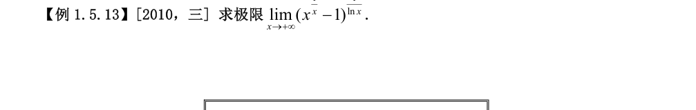
$x\to+\infty$ 时 $\dfrac{\ln x}{x}\to0$，故
$$x^{1/x}-1=e^{\frac{\ln x}{x}}-1\sim\frac{\ln x}{x}\to0.$$
对原式取对数：
$$\ln L=\frac{\ln\left(x^{1/x}-1\right)}{\ln x}\sim\frac{\ln\left(\frac{\ln x}{x}\right)}{\ln x}
=\frac{\ln\ln x-\ln x}{\ln x}=\frac{\ln\ln x}{\ln x}-1\longrightarrow-1,$$
故 $L=e^{-1}=\dfrac1e$。
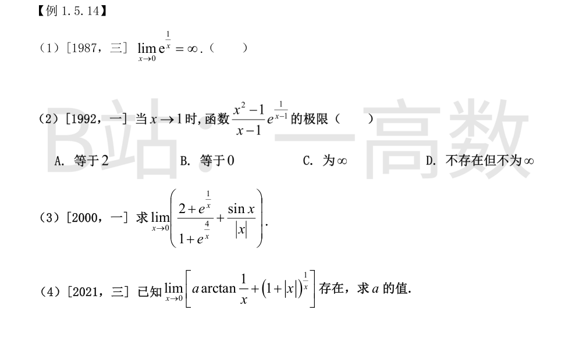
$x\to0^+$ 时 $e^{1/x}\to+\infty$；$x\to0^-$ 时 $e^{1/x}\to0$。左右极限不相等，极限不存在，且不是无穷大。故命题错误，括号内打 ×。
$\dfrac{x^2-1}{x-1}=x+1\to2$。
$x\to1^+$：$e^{\frac{1}{x-1}}\to+\infty$，乘积 $\to+\infty$；
$x\to1^-$：$e^{\frac{1}{x-1}}\to0$，乘积 $\to0$。
左右极限存在但不相等，故极限不存在且不为 $\infty$，选 D。
$x\to0^+$：分子分母同除 $e^{4/x}$，
$$\frac{2+e^{1/x}}{1+e^{4/x}}=\frac{2e^{-4/x}+e^{-3/x}}{e^{-4/x}+1}\to0,\qquad \frac{\sin x}{|x|}=\frac{\sin x}{x}\to1,\quad\text{和为 }1.$$
$x\to0^-$：$e^{1/x},e^{4/x}\to0$，比值 $\to\dfrac21=2$；$\dfrac{\sin x}{|x|}=\dfrac{\sin x}{-x}\to-1$，和为 $1$。
左右极限均为 $1$，故极限 $=1$。
$x\to0^+$：$\arctan\dfrac1x\to\dfrac\pi2$，$(1+x)^{\frac1x}\to e$，表达式 $\to\dfrac{a\pi}{2}+e$；
$x\to0^-$：$\arctan\dfrac1x\to-\dfrac\pi2$，$(1+|x|)^{\frac1x}=(1+x)^{\frac1x}\to e^{-1}$，表达式 $\to-\dfrac{a\pi}{2}+e^{-1}$。
极限存在 $\iff$ 左右极限相等：
$$\frac{a\pi}{2}+e=-\frac{a\pi}{2}+e^{-1}\ \Longrightarrow\ a\pi=e^{-1}-e\ \Longrightarrow\ a=\frac{e^{-1}-e}{\pi}.$$
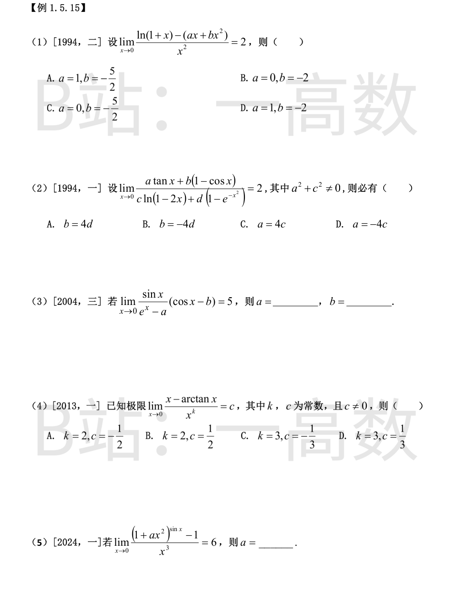
$$\ln(1+x)=x-\frac{x^2}{2}+o(x^2)\ \Rightarrow\ \text{分子}=(1-a)x+\left(-\frac12-b\right)x^2+o(x^2).$$
极限为有限数 $2$，须一次项系数为零且二次项系数比值为 $2$：
$$1-a=0,\qquad -\frac12-b=2\ \Longrightarrow\ a=1,\ b=-\frac52.$$
选 A。
$\tan x\sim x$，$1-\cos x\sim\dfrac{x^2}{2}$，$\ln(1-2x)\sim-2x$，$1-e^{-x^2}\sim x^2$。故
$$\text{分子}=ax+\frac b2x^2+o(x^2),\qquad \text{分母}=-2cx+dx^2+o(x^2).$$
若 $a,c$ 中有零，极限只能为 $0$ 或 $\infty$（可逐一验证），与 $2$ 矛盾，故 $a\ne0$ 且 $c\ne0$，此时极限由一阶主部决定：
$$\lim\frac{ax}{-2cx}=\frac{a}{-2c}=2\ \Longrightarrow\ a=-4c.$$
选 D。
若 $a\ne1$，则 $e^x-a\to1-a\ne0$，而 $\sin x\to0$，极限为 $0\ne5$，矛盾。故 $a=1$。
此时 $e^x-1\sim x$，$\dfrac{\sin x}{e^x-1}\to1$，$(\cos x-b)\to1-b$，故
$$1\cdot(1-b)=5\ \Longrightarrow\ b=-4.$$
由 $\arctan x=x-\dfrac{x^3}{3}+o(x^3)$ 得
$$x-\arctan x\sim\frac{x^3}{3}.$$
为使比值为非零常数须 $k=3$，且 $c=\dfrac13$。选 D。
$$(1+ax^2)^{\sin x}-1=e^{\sin x\ln(1+ax^2)}-1\sim\sin x\cdot\ln(1+ax^2)\sim x\cdot ax^2=ax^3.$$
故 $\dfrac{ax^3}{x^3}=a=6$。
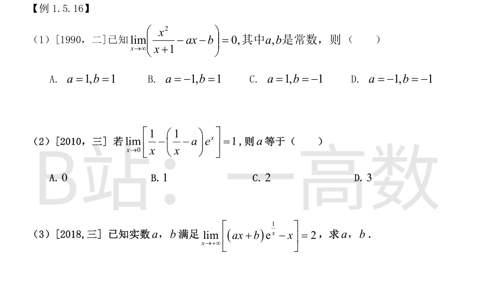
带余除法：$\dfrac{x^2}{x+1}=x-1+\dfrac{1}{x+1}$，故
$$\frac{x^2}{x+1}-ax-b=(1-a)x+(-1-b)+o(1).$$
极限为 $0$ 当且仅当 $1-a=0$ 且 $-1-b=0$，即 $a=1,\ b=-1$。选 C。
$$\frac1x-\left(\frac1x-a\right)e^x=\frac{1-e^x}{x}+ae^x\longrightarrow-1+a.$$
由极限为 $1$ 得 $a=2$。选 C。
$$e^{1/x}=1+\frac1x+\frac{1}{2x^2}+o(x^{-2}),$$
$$(ax+b)e^{1/x}-x=(a-1)x+(a+b)+\frac{a/2+b}{x}+o(x^{-1}).$$
$x\to+\infty$ 时极限存在且为 $2$，须一次项为零、常数项为 $2$：
$$a-1=0,\qquad a+b=2\ \Longrightarrow\ a=1,\ b=1.$$
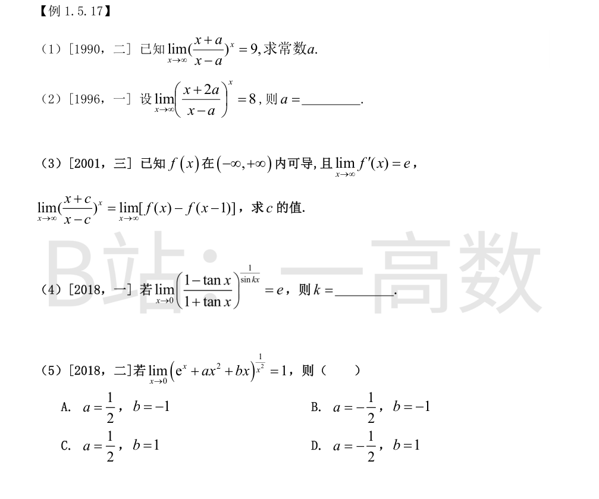
取对数：$x\ln\left(1+\dfrac{2a}{x-a}\right)\sim\dfrac{2ax}{x-a}\to2a$，故左边极限 $=e^{2a}$。
$$e^{2a}=9\ \Longrightarrow\ 2a=\ln9\ \Longrightarrow\ a=\ln3.$$
指数 $x\ln\left(1+\dfrac{3a}{x-a}\right)\sim\dfrac{3ax}{x-a}\to3a$，极限 $=e^{3a}$。
$$e^{3a}=8\ \Longrightarrow\ 3a=\ln8\ \Longrightarrow\ a=\ln2.$$
左边：$x\ln\left(1+\dfrac{2c}{x-c}\right)\sim\dfrac{2cx}{x-c}\to2c$，故左边极限 $=e^{2c}$。
右边：由拉格朗日中值定理，$f(x)-f(x-1)=f'(\xi)$，$\xi$ 介于 $x-1$ 与 $x$；$x\to\infty$ 时 $\xi\to\infty$，故右边 $\to e$。
由 $e^{2c}=e$ 得 $2c=1$，$c=\dfrac12$。
$$\frac{1-\tan x}{1+\tan x}=1-\frac{2\tan x}{1+\tan x}=1-2x+o(x).$$
取对数：$\dfrac{\ln(1-2x+o(x))}{\sin kx}\sim\dfrac{-2x}{kx}=-\dfrac2k$，故极限 $=e^{-\frac2k}$。
$$e^{-\frac2k}=e\ \Longrightarrow\ -\frac2k=1\ \Longrightarrow\ k=-2.$$
极限为 $1$，即取对数后极限为 $0$。记
$$u=e^x+ax^2+bx-1=(1+b)x+\left(\frac12+a\right)x^2+\frac{x^3}{6}+o(x^3),$$
则 $\ln(e^x+ax^2+bx)=\ln(1+u)\sim u$，
$$\lim_{x\to0}\frac{\ln(e^x+ax^2+bx)}{x^2}
=\lim_{x\to0}\left[\frac{1+b}{x}+\left(\frac12+a\right)+O(x)\right].$$
要其为 $0$，须 $\dfrac{1+b}{x}$ 项消失且常数项为 $0$：
$$1+b=0,\qquad \frac12+a=0\ \Longrightarrow\ b=-1,\ a=-\frac12.$$
选 B。
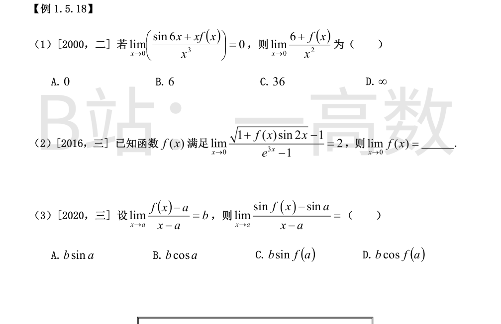
$\sin6x=6x-36x^3+o(x^3)$。条件即 $\sin6x+xf(x)=o(x^3)$，故
$$xf(x)=-\sin6x+o(x^3)=-6x+36x^3+o(x^3)\ \Longrightarrow\ f(x)=-6+36x^2+o(x^2).$$
于是
$$\frac{6+f(x)}{x^2}=36+o(1)\to36.$$
选 C。
记 $u=f(x)\sin2x\to0$（$x\to0$），则 $\sqrt{1+u}-1\sim\dfrac u2$，$e^{3x}-1\sim3x$：
$$\frac{\sqrt{1+f(x)\sin2x}-1}{e^{3x}-1}\sim\frac{f(x)\sin2x/2}{3x}\sim\frac{f(x)}{3}.$$
由极限为 $2$ 得 $\lim\limits_{x\to0}f(x)=6$。
【仲裁修正】独立校验发现分歧，经仲裁重解，以本答案为准：√(1+f·sin2x)-1 ~ f·sin2x/2 ~ f·x，分母 e^{3x}-1 ~ 3x，比值 ~ f(x)/3 → 2，故 lim f(x)=6；B 的 12 把等价无穷小用错一层
由条件 $f(x)-a=b(x-a)+o(x-a)\to0$，故 $f(x)\to a$。于是
$$\frac{\sin f(x)-\sin a}{x-a}=\frac{\sin f(x)-\sin a}{f(x)-a}\cdot\frac{f(x)-a}{x-a}\longrightarrow\cos a\cdot b.$$
选 B。
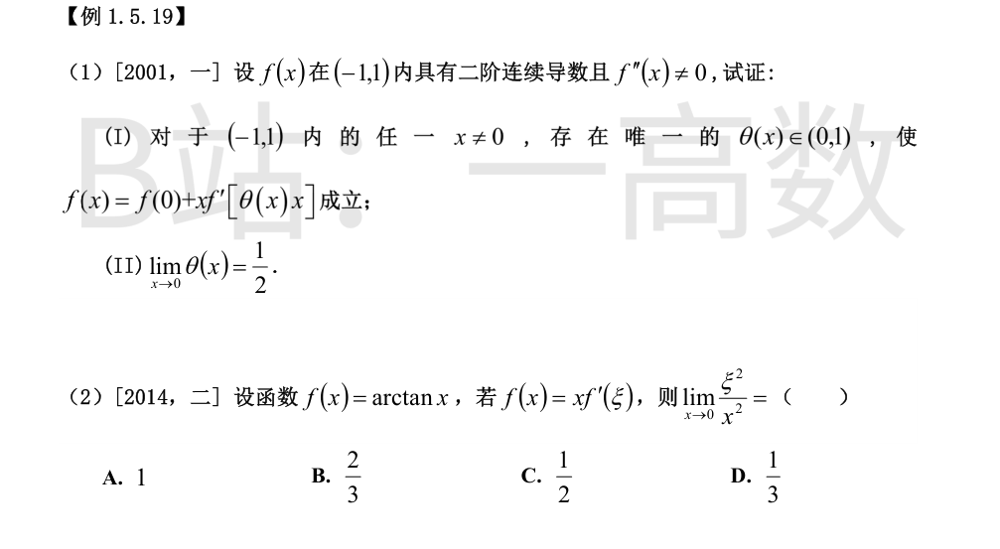
**(I)** 任取 $x\in(-1,1)$，$x\ne0$。$f$ 在以 $0,x$ 为端点的区间上满足拉格朗日中值定理条件，故存在 $\theta(x)\in(0,1)$ 使
$$f(x)=f(0)+xf'\left(\theta(x)x\right).$$
唯一性：若另有 $\theta_1\ne\theta_2$（均属 $(0,1)$）使 $f'(\theta_1x)=f'(\theta_2x)=\dfrac{f(x)-f(0)}{x}$，则 $f'$ 在以 $\theta_1x,\theta_2x$ 为端点的区间上满足罗尔定理条件，存在 $\eta$ 使 $f''(\eta)=0$，与 $f''(x)\ne0$ 矛盾。故 $\theta(x)$ 唯一。
**(II)** 对 $f'$ 在 $[0,\theta(x)x]$（或反向）上用拉格朗日中值定理：存在 $\xi$ 介于 $0$ 与 $\theta(x)x$ 之间，使
$$f'(\theta(x)x)=f'(0)+\theta(x)xf''(\xi).$$
代入 (I)：
$$f(x)=f(0)+xf'(0)+\theta(x)x^2f''(\xi).$$
另一方面由带拉格朗日余项的泰勒公式，存在 $\xi_1$ 介于 $0$ 与 $x$ 之间：
$$f(x)=f(0)+xf'(0)+\frac{x^2}{2}f''(\xi_1).$$
两式相减并除以 $x^2$（$x\ne0$）：
$$\theta(x)f''(\xi)=\frac{f''(\xi_1)}{2}.$$
$x\to0$ 时 $\xi,\xi_1\to0$，由 $f''$ 连续且 $f''(0)\ne0$，得
$$\lim_{x\to0}\theta(x)=\frac{f''(0)}{2f''(0)}=\frac12.\qquad\blacksquare$$
$f'(x)=\dfrac{1}{1+x^2}$，条件即 $\arctan x=\dfrac{x}{1+\xi^2}$，解出
$$\xi^2=\frac{x}{\arctan x}-1.$$
由 $\arctan x=x-\dfrac{x^3}{3}+o(x^3)$：
$$\frac{x}{\arctan x}=\frac{1}{1-\frac{x^2}{3}+o(x^2)}=1+\frac{x^2}{3}+o(x^2),$$
故 $\dfrac{\xi^2}{x^2}=\dfrac{\frac{x^2}{3}+o(x^2)}{x^2}\to\dfrac13$。选 D。
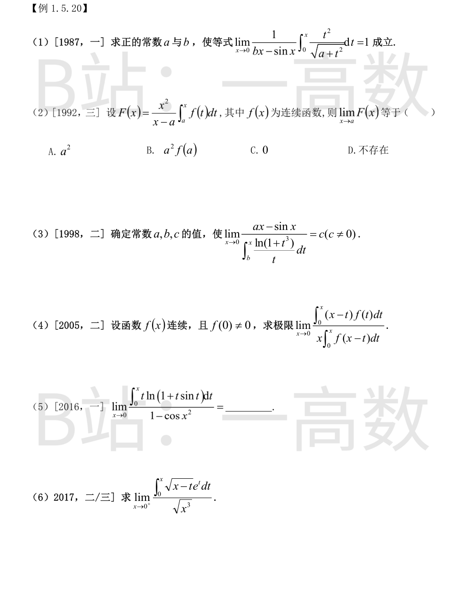
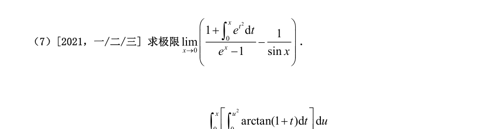
记 $F(x)=\displaystyle\int_0^x\dfrac{t^2}{\sqrt{a+t^2}}\mathrm dt$，则 $F(0)=0$，$F'(x)=\dfrac{x^2}{\sqrt{a+x^2}}\sim\dfrac{x^2}{\sqrt a}$。由洛必达法则，
$$\lim_{x\to0}\frac{F(x)}{bx-\sin x}=\lim_{x\to0}\frac{x^2/\sqrt a}{b-\cos x}\quad(\text{形式上}).$$
若 $b\ne1$，分母 $b-\cos x\to b-1\ne0$，而分子 $\to0$，极限为 $0\ne1$，故必须 $b=1$。此时
$$\lim_{x\to0}\frac{x^2/\sqrt a}{1-\cos x}=\lim_{x\to0}\frac{x^2/\sqrt a}{x^2/2}=\frac{2}{\sqrt a}=1\ \Longrightarrow\ a=4.$$
故 $a=4,\ b=1$。
$f$ 连续，故 $x\to a$ 时 $\displaystyle\int_a^xf(t)\mathrm dt\sim f(a)(x-a)$（积分中值定理或洛必达）。于是
$$\lim_{x\to a}F(x)=\lim_{x\to a}\frac{x^2\int_a^xf(t)\mathrm dt}{x-a}=a^2f(a).$$
选 B。
分子 $\to0$，而极限 $c\ne0$ 有限，故分母必 $\to0$：$\displaystyle\int_b^x\to\int_b^0$，即 $b=0$。
洛必达：
$$\lim_{x\to0}\frac{a-\cos x}{\frac{\ln(1+x^3)}{x}}=\lim_{x\to0}\frac{a-\cos x}{x^2}.$$
若 $a\ne1$，分子 $\to a-1\ne0$，分母 $\to0$，极限为 $\infty$，与 $c$ 有限矛盾。故 $a=1$，此时
$$c=\lim_{x\to0}\frac{1-\cos x}{x^2}=\frac12.$$
故 $a=1,\ b=0,\ c=\dfrac12$。
分母：令 $u=x-t$，$\displaystyle\int_0^xf(x-t)\mathrm dt=\int_0^xf(u)\mathrm du$，故分母 $=x\displaystyle\int_0^xf(u)\mathrm du$。
分子记 $N(x)=x\displaystyle\int_0^xf(t)\mathrm dt-\int_0^xtf(t)\mathrm dt$，则 $N'(x)=\displaystyle\int_0^xf(t)\mathrm dt$。洛必达：
$$\lim_{x\to0}\frac{N(x)}{x\int_0^xf}\overset{L}{=}\lim_{x\to0}\frac{\int_0^xf(t)\mathrm dt}{\int_0^xf(t)\mathrm dt+xf(x)}
=\lim_{x\to0}\frac{\frac1x\int_0^xf}{\frac1x\int_0^xf+f(x)}=\frac{f(0)}{f(0)+f(0)}=\frac12,$$
其中 $\dfrac1x\displaystyle\int_0^xf\to f(0)\ne0$。
$t\to0$ 时 $t\sin t\sim t^2$，$\ln(1+t\sin t)\sim t\sin t\sim t^2$，故被积函数 $\sim t^3$，
$$\int_0^xt\ln(1+t\sin t)\mathrm dt\sim\int_0^xt^3\mathrm dt=\frac{x^4}{4};\qquad 1-\cos x^2\sim\frac{x^4}{2}.$$
极限 $=\dfrac{1/4}{1/2}=\dfrac12$。
令 $u=x-t$：$\displaystyle\int_0^x\sqrt{x-t}\,e^{t}\mathrm dt=e^{x}\int_0^x\sqrt u\,e^{-u}\mathrm du$。
$u\to0^+$ 时 $\sqrt u\,e^{-u}=\sqrt u(1+O(u))$，故
$$\int_0^x\sqrt u\,e^{-u}\mathrm du=\int_0^x\left(\sqrt u+O(u^{3/2})\right)\mathrm du=\frac23x^{3/2}+O(x^{5/2}).$$
于是
$$\lim_{x\to0^+}\frac{e^x\left(\frac23x^{3/2}+O(x^{5/2})\right)}{x^{3/2}}=\frac23.$$
$$\int_0^xe^{t^2}\mathrm dt=x+\frac{x^3}{3}+o(x^3),\qquad e^x-1=x+\frac{x^2}{2}+\frac{x^3}{6}+o(x^3).$$
$$\frac{1+\int_0^xe^{t^2}\mathrm dt}{e^x-1}
=\frac1x\cdot\frac{1+x+\frac{x^3}{3}+o(x^3)}{1+\frac x2+\frac{x^2}{6}+o(x^3)}
=\frac1x\left(1+x+\frac{x^3}{3}\right)\left(1-\frac x2+\frac{x^2}{12}+o(x^2)\right).$$
其中 $(1+x+\frac{x^3}{3})(1-\frac x2+\frac{x^2}{12})=1+\frac x2-\frac{5x^2}{12}+O(x^3)$，故
$$\frac{1+\int_0^xe^{t^2}\mathrm dt}{e^x-1}=\frac1x+\frac12+O(x).$$
又 $\dfrac{1}{\sin x}=\dfrac1x+\dfrac x6+O(x^3)$，所以
$$\text{原式}=\left(\frac1x+\frac12+O(x)\right)-\left(\frac1x+O(x)\right)\longrightarrow\frac12.$$
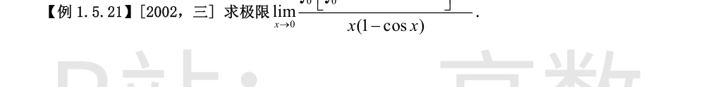
$0/0$ 型，外层变限积分求导（洛必达一次）：
$$L=\lim_{x\to0}\frac{\displaystyle\int_0^{x^2}\arctan(1+t)\,\mathrm dt}{1-\cos x+x\sin x}.$$
$x\to0$ 时被积函数 $\arctan(1+t)\to\dfrac\pi4$（连续），故
$$\int_0^{x^2}\arctan(1+t)\,\mathrm dt\sim\frac{\pi}{4}x^2;$$
分母 $1-\cos x+x\sin x\sim\dfrac{x^2}{2}+x^2=\dfrac{3x^2}{2}$。于是
$$L=\frac{\frac\pi4x^2}{\frac32x^2}=\frac{\pi}{6}.$$
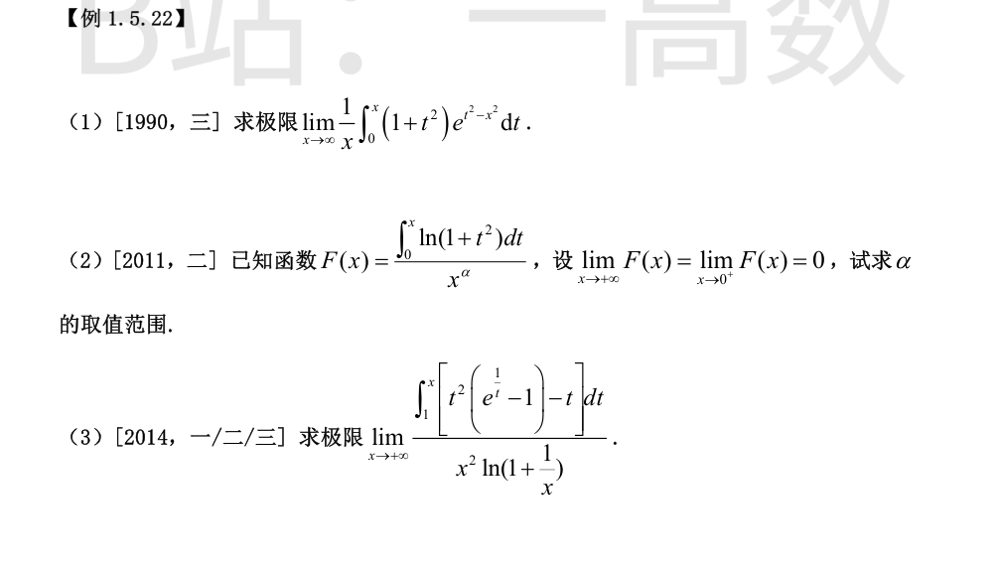
$$\frac1x\int_0^x(1+t^2)e^{t^2-x^2}\mathrm dt=\frac{\int_0^x(1+t^2)e^{t^2}\mathrm dt}{xe^{x^2}}.$$
$x\to\infty$ 时为 $\dfrac\infty\infty$ 型，洛必达：
$$\lim_{x\to\infty}\frac{(1+x^2)e^{x^2}}{e^{x^2}(1+2x^2)}=\lim_{x\to\infty}\frac{1+x^2}{1+2x^2}=\frac12.$$
**$x\to0^+$：** $\ln(1+t^2)\sim t^2$，$\displaystyle\int_0^x\ln(1+t^2)\mathrm dt\sim\frac{x^3}{3}$，故
$$F(x)\sim\frac{x^{3-\alpha}}{3}\to0\iff 3-\alpha>0\iff\alpha<3.$$
**$x\to+\infty$：** 分部积分
$$\int_0^x\ln(1+t^2)\mathrm dt=x\ln(1+x^2)-2x+2\arctan x\sim2x\ln x,$$
故 $F(x)\sim\dfrac{2x\ln x}{x^\alpha}=2x^{1-\alpha}\ln x\to0\iff1-\alpha<0\iff\alpha>1$。
综上 $1<\alpha<3$。
$$e^{\frac1t}=1+\frac1t+\frac{1}{2t^2}+\frac{1}{6t^3}+o(t^{-3})\ \Longrightarrow\ t^2\left(e^{\frac1t}-1\right)-t=\frac12+\frac{1}{6t}+o(t^{-1}),$$
$$\int_1^x\left[\frac12+\frac{1}{6t}+o(t^{-1})\right]\mathrm dt=\frac x2+O(\ln x).$$
分母：$x^2\ln\left(1+\dfrac1x\right)\sim x^2\cdot\dfrac1x=x$。故
$$\text{原式}=\lim_{x\to+\infty}\frac{\frac x2+O(\ln x)}{x}=\frac12.$$